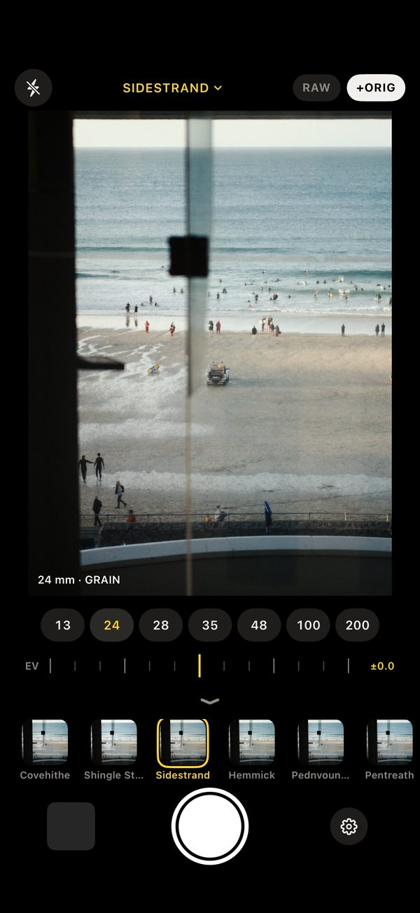
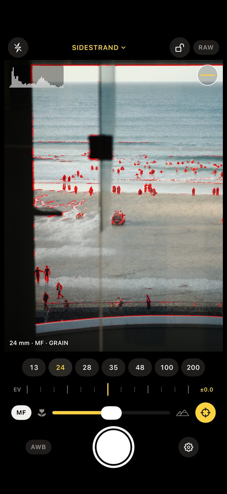

Using CubeCam
This guide covers everything CubeCam does, from first launch to reshaping a photograph's colours after the event. Most of it can be skipped until you need it; the first two sections are worth reading straight away.
First launch
The first time CubeCam opens it takes you through four short screens.
- A welcome screen. Tap Get started.
- Permissions. CubeCam needs the camera, and permission to add photos to your library. You can't continue without both.
- Make it your camera. This lists the four places on an iPhone that a camera opens from, each with instructions. You can come back to it later from Settings.
- Pick a starting look. This shows a large before-and-after of whatever the camera is pointing at. Drag across it to compare, and tap a look's name to choose it. Pointing the camera at something with skin tones and a range of colours, then tapping Refresh, gives the best idea of each look.
Making CubeCam your camera
There is no setting on the iPhone for a default camera. Instead, each of the places a camera can be opened from lets you choose which camera it opens. CubeCam can be chosen in any or all of them, and it then opens straight away, even when the phone is locked.
Open CubeCam once while the phone is unlocked before setting these, so that iOS knows about it. If CubeCam doesn't appear in one of the lists below, restarting the iPhone usually fixes it.
Camera Control
- Open Settings and go to Camera, then Camera Control.
- Under Launch Camera, choose CubeCam.
The Lock Screen camera button
- Lock the iPhone and wake the screen.
- Touch and hold the Lock Screen, then tap Customise and choose the Lock Screen.
- Tap the camera button in the bottom right corner, tap the minus sign to remove it, then tap the plus sign and choose CubeCam.
The Action button
- Open Settings and go to Action Button.
- Swipe across to Controls, tap Choose a Control, and pick CubeCam.
Control Center
- Swipe down from the top right corner to open Control Center.
- Touch and hold an empty space, then tap Add a Control.
- Search for CubeCam and tap it.
The same instructions are in CubeCam's Settings, under Use CubeCam as your camera. Whichever camera you choose for these buttons, Camera Control and the volume buttons take the picture whenever CubeCam is already open.
The camera screen

The screen is arranged as a top bar, the picture itself, up to three rows of controls below the picture, and the shutter with a button on either side. Apart from the shutter, everything can be moved or removed, as described in Changing the layout. These are all the controls that can be placed on it.
| Look name | Shows the current look. Tapping it opens a menu of all the looks, along with Compare looks, Customise layout and Settings. |
|---|---|
| Flash | On or off. There is no automatic setting, so it never fires unexpectedly. |
| RAW | Saves an Apple ProRAW file as well. See Saving and originals. |
| SR | Turns super resolution on or off. Not on the screen to begin with; add it in the layout editor. |
| +ORIG | Keeps Apple's original alongside the graded photograph. |
| Lenses | Focal lengths from 13 to 200 mm. Tapping the selected one again locks to that lens. |
| Exposure | A scale from −2 to +2 stops in thirds. Drag it, and double-tap to return to zero. |
| Look strip | A swatch of each look, made from what the camera is seeing. The small arrow above it slides it open and closed. |
| Amount | Fades the look back towards Apple's image, from 0 to 100%. |
| Focus | An AF/MF switch and a near-to-far slider, with a button for focus peaking in manual focus. |
| AE/AF lock | Holds the exposure and focus where they are. |
| WB | White balance: automatic, 5600K for daylight, 4300K, or 3200K for tungsten light. |
| Timer | Off, 3 seconds or 10 seconds. |
| Aspect | Frame guides for 4:3, 3:2, 16:9 and 1:1. |
| Grid | Lines dividing the frame into thirds. |
| Grain | Turns grain on or off. |
| Last photo | Opens CubeCam's photo viewer. |
| Settings | Always somewhere on the screen. |
| Readout | A line of text over the picture showing the focal length and exposure, and whether the lens is locked or the focus manual. |
| Histogram | A live histogram over the picture. |
| Level | A horizon level, which turns yellow when the camera is straight. |
Tapping the picture focuses and meters on that point. As well as the shutter button, Camera Control and the volume buttons take a picture.
Looks and grain
There are ten looks. Covehithe, Shingle Street, Sidestrand, Hemmick, Pednvounder, Pentreath and Trimingham are colour looks; Benacre, Happisburgh and Salthouse are black and white: Benacre is soft and low in contrast, Happisburgh deep and contrasty, and Salthouse harder still, as if through a red filter. The home page describes each one and lets you compare them on several photographs.
Choosing a look
A look can be chosen from the look strip, from the menu that opens when the look's name is tapped, or with Camera Control by light-pressing, sliding to Look and then sliding through the names. Compare looks, in the same menu and in Settings, shows a large before-and-after of the live view so that the looks can be tried on the actual scene in front of you.
How strong the looks are
Every look keeps a mid-grey exactly where Apple put it, so the picture's overall brightness doesn't change from one look to another. Colour looks are mixed with Apple's image to keep them subtle, while the black and white looks are applied in full. The Amount slider, in Settings or as a control on the camera screen, fades any look further back towards the original.
Grain
The grain is a fine speck at each pixel, heaviest in the mid-tones, which keeps it crisp when you zoom in and subtle at normal viewing size. The black and white looks have neutral grey grain with no colour in it. Settings has a switch to turn grain off, a Grain amount slider from 0 to 200% (where 100% is each look's own amount), and a choice of whether grain is shown in the viewfinder.
Importing your own looks
As well as its own ten looks, CubeCam can use any 3D LUT saved as a .cube file. An imported look works just like the built-in ones: in the viewfinder, on saved photographs, in the photo viewer and with the phone locked.
Where to find them
CubeCam's own extra looks are on the Looks page, free to download. Another good place to look is the G'MIC colour presets, a free collection of over a thousand looks with a before-and-after for each, including a strong set of black and white ones. Each set can be downloaded as .cube files. The presets come from many different authors, so check a set's own terms if you want to use it for anything beyond your own photographs.
Adding one
- Download the .cube file to your iPhone. If it arrives as a .zip, tap it in the Files app to unpack it.
- In CubeCam, open Settings and, under Your looks, tap Import a .cube file. Or open the .cube from Files, Mail or AirDrop and choose CubeCam.
- CubeCam shows the look on whatever the camera is pointing at. Press and hold the picture to see it without the look.
- Give it a name, check the Input, set the Strength and Grain, and tap Save.
Input tells CubeCam what kind of picture the LUT was made for. Most creative looks, including the G'MIC presets, are made for finished pictures, so leave it on Standard picture. Choose one of the log formats only if the LUT was made for log footage from a particular camera; CubeCam then converts the photo to that format first. Strength mixes the look with Apple's picture, and 70 to 85% is often nicer than full strength. A black and white LUT is the exception: it is always used in full and has no Strength to set, because mixing any of Apple's picture back in would bring some of its colour with it. An imported look can be renamed, changed or deleted later from the same list in Settings, and photographs already taken with it keep their look.
Lenses and lens lock
On an iPhone 17 Pro, 13 mm is the ultra-wide camera, 24 mm is the main camera, and 28, 35 and 48 mm are taken from the main camera's sensor. 100 mm is the telephoto camera, and 200 mm is taken from the telephoto's sensor. Other iPhones offer whichever of these their cameras allow.
Left to itself, the iPhone switches between its cameras as conditions change, using the main camera when the light is poor or the ultra-wide for very close subjects, even when another focal length has been chosen. Tapping the selected focal length a second time locks CubeCam to that physical lens. A small padlock appears on it, the readout shows LOCKED, and the iPhone stops switching. Tapping it again releases the lock. Choosing a different focal length while locked moves the lock to the new lens. The same setting is in Settings under Lenses.
A locked lens can't focus as close as the iPhone manages when it is free to switch to the ultra-wide, so very close subjects need the lock released or the 13 mm lens. Locking and unlocking makes the picture blink briefly while the camera changes over.
Exposure
The exposure scale adjusts the brightness in thirds of a stop between −2 and +2. Drag it left or right, and double-tap it to return to zero.
Tapping the picture also measures the light at that point, when Screen tap in Settings is set to Focus and exposure, which is the default. A small sun next to the focus square shows that the exposure has been set there. Setting Screen tap to Focus only leaves the exposure measured across the whole frame.
The AE/AF lock holds both the exposure and the focus. It stays set through lens changes and manual focus, and is released by tapping it again or by tapping the picture, as on Apple's Camera.
Focus and focus peaking
Tapping anything in the picture focuses on it, and a yellow square marks the point. If the scene changes substantially, the focus returns to the whole frame.
For manual focus, add the Focus control to the camera screen, or choose the Manual layout, which includes it. Dragging its slider towards the flower focuses closer and towards the mountain further away; moving it switches to manual focus automatically. Tapping MF, or tapping the picture, returns to autofocus.

While focusing by hand, focus peaking outlines the sharpest edges in colour, which makes it easy to see exactly where the plane of focus lies. It appears only in the viewfinder and never in the photograph. The button at the end of the Focus row turns it on and off, and Settings lets you choose red, yellow, blue or white.
Camera Control
On iPhones with Camera Control, a full press takes the picture as soon as the button goes down. A light press shows CubeCam's controls, and sliding a finger along the button adjusts the one shown. A light double-press moves between them: Zoom, Exposure, Look and Focus. Changes made this way show on the screen too, so the lens readout, the exposure scale, the look and the focus slider all follow. While CubeCam is open, the volume buttons also take a picture.
Changing the layout

The layout editor opens from the top of Settings, or from the menu under the look's name. It shows a plan of the camera screen divided into slots, with a tray of the controls not currently in use below it.
Each slot accepts one kind of control, which keeps the camera usable whatever you do. The top bar and the two positions beside the shutter take buttons such as flash, RAW, the look name and the timer. The rows below the picture take full-width controls: the lenses, the exposure scale, the look strip, Amount and Focus. The four corners of the picture take overlays: the readout, the histogram and the level.
To add a control, drag it from the tray onto one of the highlighted slots, or tap it and then tap a slot. Dragging a control from one slot to another moves it, and dropping it on a slot that is already occupied swaps the two. To remove a control, tap the small cross on it or drag it back to the tray. Three ready-made layouts, Default, Minimal and Manual, are at the top of the editor and also in Settings, and Reset returns to Default.
The Settings button can be moved but never removed, so there is always a way back into Settings. If another control is dropped on it, Settings moves to a free button slot. Settings is also in the menu under the look's name.
Flash, timer and the rest
The flash is either on or off. The timer cycles through off, 3 seconds and 10 seconds, and counts down on the picture. The aspect guides mark out 4:3, 3:2, 16:9 and 1:1 frames, although the photograph itself is saved at the full 4:3 frame for cropping later. White balance can be automatic or fixed at 5600K, 4300K or 3200K. The grid, histogram and level are added in the layout editor, and the histogram and level only run while they are on the screen.
Super resolution
Super resolution merges a short burst of photographs into one larger picture. Switch it on in Settings, under Capture, or add the SR button to your layout. With it on, each press of the shutter takes four photographs one after another, and a counter on the picture asks you to hold still while it does. There is no need for a tripod, and a tripod would in fact defeat it: the method depends on the small movements of your hands between one photograph and the next.
The four are then lined up and merged into a picture half as large again in each direction. The main camera's 48 megapixels become 108, and a lens that gives 12 megapixels becomes 48. The burst is always taken at the most the lens can give, whatever resolution is set, and while super resolution is on CubeCam keeps to the lens you have chosen and doesn't switch cameras by itself.
Waiting for the picture
Merging takes a while, up to a minute for the largest pictures. A note at the bottom of the viewfinder says so while it is going on, and asks you to keep CubeCam open. You can carry on taking photographs in the meantime. If you do leave the app, nothing is lost: the four photographs are kept, and the merge starts again when you come back.
What to expect
The gain is real but modest. Fine detail holds together better and the picture is cleaner, with less of the blotchiness an ordinary photograph shows when you zoom right in. It works best on things that stay put. Anything that moves during the burst, such as people walking or leaves in the wind, is taken from a single photograph, so it looks as it would in an ordinary shot and gains nothing. A photograph that was blurred by a jolt is left out of the merge.
Sharpening
With super resolution on, Settings shows a Sharpening choice of Off, Light or Strong, which sets how crisp the merged picture is made. Light is the default and suits most pictures.
Super resolution doesn't fire the flash or save a ProRAW file, and the files are large: a 108 megapixel photograph with grain can be several times the size of a 48 megapixel one.
Saving and originals
Photographs are saved to your library as HEIF files, the right way up for however the phone was held. Each shot is kept safely inside CubeCam until it has reached the library, so closing the app straight after taking a picture doesn't lose it; it simply finishes saving the next time CubeCam opens.
Keeping the original
Keep original, in Settings under Saving and as the +ORIG button, has three settings.
- Revertible edit, the default and the recommended choice, saves a single photograph showing the graded version, with Apple's original kept underneath. Edit and then Revert in the Photos app brings back the original, and CubeCam's viewer can change the look later.
- Second photo saves the original as a separate photograph next to the graded one.
- Off saves only the graded photograph, whose look then can't be changed.
Apple ProRAW
With RAW switched on, the ProRAW file is saved as well, untouched and as a photograph of its own next to the graded one. ProRAW files are large.
Resolution
Photographs can be 12, 24 or 48 megapixels, set in Settings; 24 is the default. Fine grain is detail that doesn't compress well, so larger photographs make noticeably larger files.
The photo viewer and your library
The last-photo button opens CubeCam's own viewer, which shows the photographs CubeCam has taken, and any you have added, newest first. The first time it opens, it asks to read your library. Choosing Limited or Full Access is fine, as CubeCam only shows its own photographs and the ones you add to it, but choosing Don't Allow also stops CubeCam saving.
The strip of thumbnails moves between photographs, as does swiping the picture sideways; swiping it down goes back to the camera. A photograph you have only just taken is there straight away, marked as saving until it has reached your library, and can be edited as soon as it has. Holding a finger on the picture shows Apple's original. Pinch to zoom in, drag to move around, and double-tap to zoom in on a spot or back out again. Below the picture are three panels.
- Look tries any of the looks on the photograph, made from Apple's original, with an Amount slider.
- Adjust has exposure, contrast, shadows, warmth, saturation and grain. Double-tapping a slider's row returns it to zero.
- Info shows the look, amount and grain the photograph was saved with, together with the camera, focal length, aperture, shutter speed, ISO, exposure compensation, flash, size and date.
Changes save themselves, a few seconds after you stop, or at once if you move to another photograph or leave the viewer. Until then, Undo changes puts the photograph back as it was. Each change is written into the photograph as a new revertible edit. If iOS asks for permission for CubeCam to modify the photo, that is how Apple protects photographs from apps. Revert to original goes back to Apple's original, and Open in Photos shows the photograph there. The share button, at the top, shares the photograph or exports a copy of it. The button with a hexagon of dots, at the top, opens the photograph in the colour editor.
Changing the look needs Apple's original, so it is only possible for photographs saved with Keep original switched on. Photographs saved without it can still be adjusted.
Exporting a copy
Export a copy, under the share button, makes a new photograph from the one on show and leaves the first as it was. It works from the photograph as saved, so a change you are part-way through is saved first.
- Size is the longest side of the copy: full size, or 4096, 3000, 2048 or 1080 pixels. A photograph is never made bigger than it is, and the size the copy will come out at is shown under the preview.
- File type is JPEG, which everything accepts, or HEIF, which is smaller.
- Square border sets the whole photograph, with nothing cropped, on an exactly square background in white, off-white or black. Width is how much border there is beside the photograph's long side, 2% to start with. With a border, Size is the side of the square.
Save to Photos adds the copy to your library as a photograph of its own, and Share sends the file to another app. CubeCam remembers the choices for next time. The copy doesn't join CubeCam's photographs, since it has no original underneath for the looks to work from.
Photographs from your library
CubeCam can also work on photographs it didn't take. The button with a photo and a plus sign, at the top of the viewer, opens your library; the photograph you choose joins CubeCam's photographs, at the front, as if CubeCam had taken it. It starts with no look, and from there it works like any other: try the looks on it, adjust it, edit its colours, and save. As with CubeCam's own photographs, the change is saved as a revertible edit, so Revert in the Photos app always brings back the photograph as it was. The None look, at the start of the Look panel, takes a photograph back to no look at all.
Sharing to CubeCam from other apps
Photographs can also be sent to CubeCam from any app that shares them, such as Photos or an app that brings pictures across from a dedicated camera. Choose Share, then CubeCam; the first time, CubeCam may be under More at the end of the row of apps. Up to 20 photographs can be sent at once. iOS doesn't let the share sheet open CubeCam itself, so it confirms the photographs have arrived; the next time you open CubeCam, it goes straight to the viewer with them at the front, ready for a look.
A photograph that is already in your library, such as one shared from Photos, is found there and edited in place, so nothing is duplicated and Revert still takes it back. One that isn't in your library yet is saved to it first, as it arrived, and then added.
Editing colours
The colour editor changes a photograph's colours directly, rather than with sliders for the whole picture. CubeCam finds the main colours in the photograph, and when you move one, every similar colour follows it, the rest of the picture staying as it was. It opens from the button with a hexagon of dots at the top of the photo viewer, and Done goes back to the viewer.
Moving a colour
Touch a colour in the photograph and slide. Sliding sideways turns its hue, so a green can become more yellow or more blue, and sliding up or down makes it lighter or darker. For greys, whites and other colours without much hue, sliding sideways makes them warmer or cooler instead. Pinch with two fingers to zoom into the photograph and move around it, or double-tap to zoom in on a spot; when zoomed, the same slide makes a finer change.
Below the photograph, Colours in this photo shows the main colours as dots on a colour wheel, with a faint cloud of every colour in the picture behind them. Dragging a dot moves that colour, and the cloud bends with it. Where dots sit close together, pinch to zoom into the wheel and they spread apart; double-tap to zoom in on the colours or back out.
The colour you last touched has its own sliders: Hue and Richness (or Warmth, for greys), Brightness, and Reach, which sets how far the change spreads to neighbouring colours. Your moves lists everything changed so far, each with its own undo, and Reset all starts again. Holding Original at the top shows the photograph as it was.
Borrowing colour
Borrow colour takes the colours of another photograph from your library and matches each main colour in this one to its nearest counterpart, so a grey afternoon can take on the colours of a golden evening. Amount sets how far to go, Keep brightness leaves the light and shade alone, and each pair can be switched off. Use these colours turns the pairs into ordinary moves you can fine-tune; only colour is taken, never the content of the other photograph.
Saving
Save offers three things.
- Save to this photo writes the colours into the photograph as part of its revertible edit, as the viewer does. The colour changes stay with the photograph: they are kept if you later change its look in the viewer, open again where you left them, and Revert to original removes them along with everything else. Photographs saved without Keep original can't be edited this way, so for those this becomes Save a copy to Photos, which adds a new photograph instead.
- Save as a look turns the change into a look of its own, which joins your looks for the viewfinder and for other photographs.
- Export .cube file saves it as a 3D LUT for other apps: 33-point works almost everywhere, 65-point is finer, for grading software on a computer.
Shooting with the phone locked
With CubeCam chosen for Camera Control, the Lock Screen or the Action button, it opens immediately on a locked iPhone, with your look, layout and settings. iOS doesn't allow any camera app to save to the photo library while the phone is locked, so photographs taken this way are kept safely and moved into the library the next time CubeCam is opened with the phone unlocked. The last-photo button on the locked camera asks you to unlock the phone and opens CubeCam.
Settings
Settings opens with the camera layout, followed by the instructions for using CubeCam as your camera. The Look section holds the default look, Compare looks, Amount, and the grain controls, and Your looks is where imported looks are added and managed. Capture has ProRAW, the resolution, super resolution and what a tap on the screen does. Saving controls how the original is kept. Focus has focus peaking and its colour, and Lenses has the lens lock and whether the main camera starts at 24, 28 or 35 mm.
Some suggestions
For street photography, the Minimal layout with the lens locked at 28 or 35 mm keeps the screen clear and the drawing consistent. For slower, more careful work, the Manual layout brings the histogram, the level, focus peaking and the exposure lock together. Keeping originals as revertible edits costs nothing and leaves every look open to reconsider later. When choosing a default look, try them on a scene with skin and a few strong colours, since that is where the differences show. In black and white, Benacre suits soft, open light, and Happisburgh suits strong light and graphic subjects. In the colour editor, small moves go a long way: a sky turned a few degrees towards cyan, or foliage made a little less rich, often does more than any look.
If something doesn't behave as described here, the support page may help.